PanPhyMech · User guide
Build an experiment, then measure its motion
Start with a pendulum, watch its energy change, then explore your own objects, connectors and graphs.
Your first mechanics experiment
Follow these five steps in order. Screenshots match your theme; select one to enlarge it.
Step 1 of 5
Open an example
- Open PanPhyMech in a new tab. Choose Examples → Simple pendulum. Opening an example replaces your scene; Undo can restore it.
- Find Parts on the left, the Scene in the middle and the Inspector on the right. The graph starts closed: press Graph in the Scene toolbar to open it below the Scene. On a narrow screen, use the panel buttons in the Scene heading to open Parts or Inspector.
- The example starts with a 1 kg bob on a 2.5 m rod. Leave its settings unchanged for this walkthrough.
A bob hangs from a background anchor, released at an angle. The graph tracks Bob with Energy selected, ready to record.
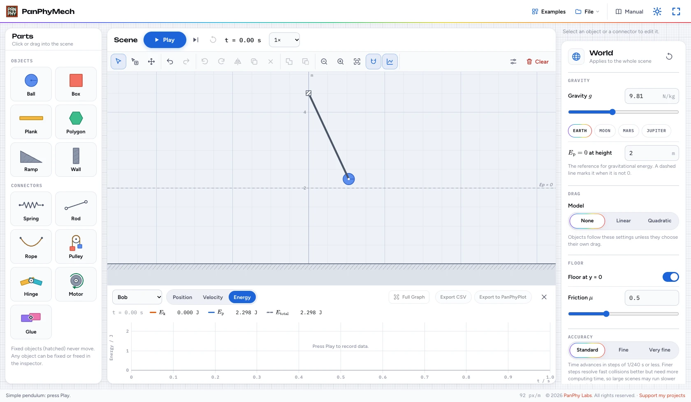
Enlarge screenshot ↗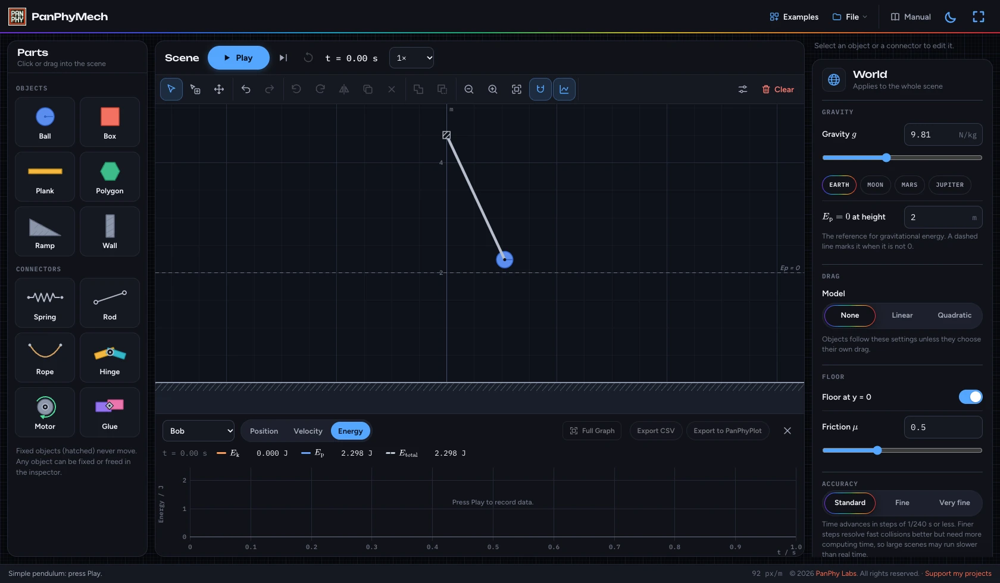
Enlarge screenshot ↗Step 2 of 5
Run, pause and reset
- Press Play or Space. Let the pendulum swing for several seconds, then press Pause.
- Use the speed menu beside the time to watch in slow motion. The time shown and graph times are simulated seconds.
- The step button advances 1/60 s. Reset returns to the starting setup and clears the recording; save that for after you export.
The bob swings while kinetic and gravitational energy trade places. Their total stays approximately constant; Pause holds the scene and keeps the graph.
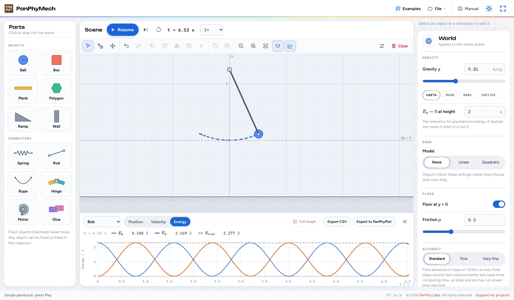
Enlarge screenshot ↗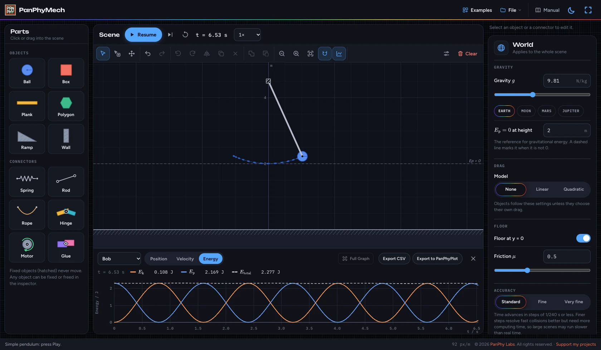
Enlarge screenshot ↗Step 3 of 5
Inspect and change settings
- With the scene paused, click the bob. The Inspector shows its properties and current readings. Right-click it, or touch and hold, for quick settings.
- Use the numeric fields for precise mass, friction, bounciness and air resistance. Reset before testing a different starting position or velocity.
- Click empty space to show the World card, whose settings apply to the whole scene. It has four sections: Gravity (strength, planet presets and the reference height for gravitational energy), Drag (the default drag for every object), Floor (on or off, and its friction) and Accuracy (how finely time is stepped).
The bob is highlighted and its settings appear in the Inspector. The example’s gravitational-energy reference is 2 m, the height of the bob at its lowest point.
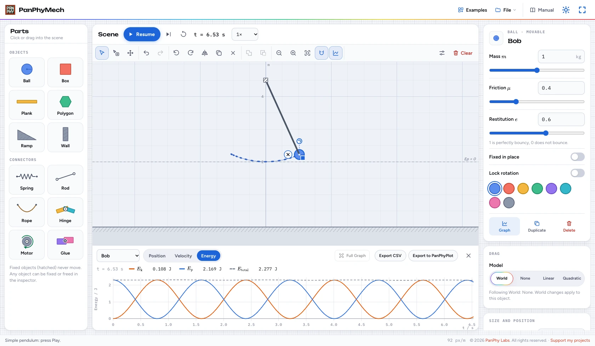
Enlarge screenshot ↗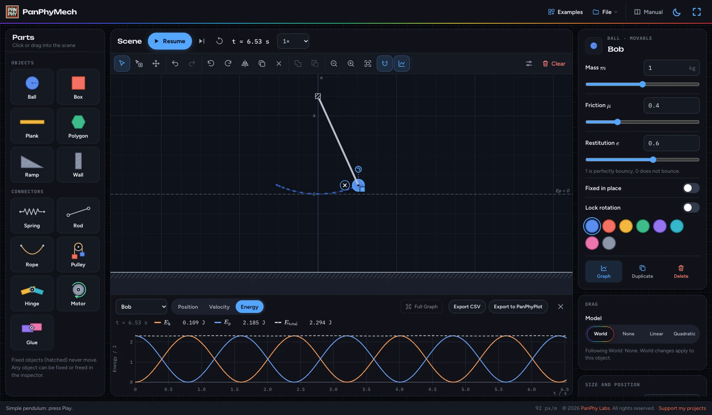
Enlarge screenshot ↗Step 4 of 5
Read and export a graph
- Use Graph of to choose Bob, a spring when present, or Whole system. For Bob, switch between Position, Velocity and Energy.
- Hover over the graph to read the nearest sample. Drag across the graph to zoom into a time interval. Full Graph restores the complete recording.
- Use Export CSV for the chosen object’s recorded quantities, or Export to PanPhyPlot to analyze them. Both use the displayed time interval and retain the original sample times.
The chosen quantity is plotted against time. A selected time interval narrows both the graph view and exported data.
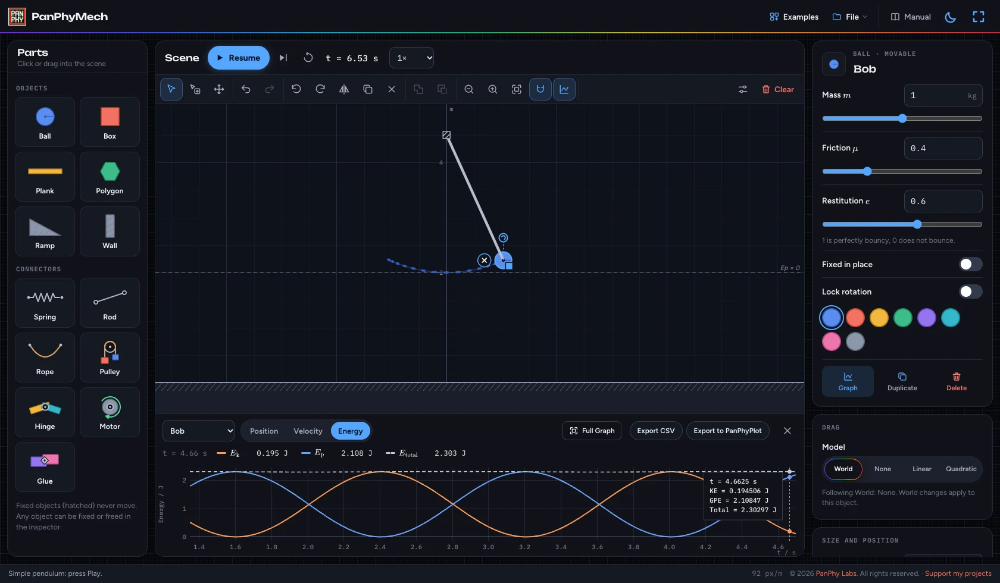
Enlarge screenshot ↗Step 5 of 5
Save or export the scene
- Your setup autosaves in this browser. Choose File → Save as file (.ppmech)… for a portable copy.
- Use Open file… to load a saved setup. Save the current work first if you want to keep a separate copy.
- Export the current scene view as SVG or PNG, or choose Export to PanPhyMD to put an embedded scene image in notes.
A .ppmech file preserves an editable setup. Graph recordings are separate: export them as CSV before resetting or replacing the scene.
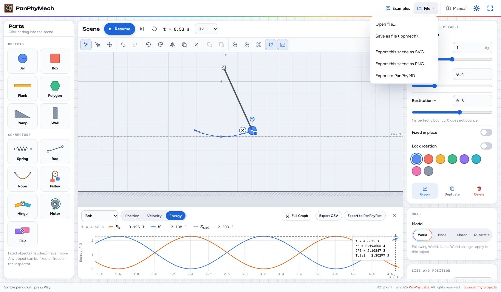
Enlarge screenshot ↗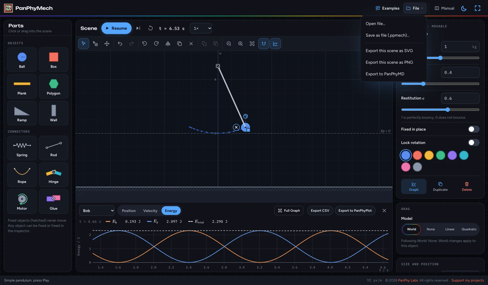
Enlarge screenshot ↗Tip: build complex objects
Merge and Subtract turn simple parts into one custom shape. These five steps build the car from Examples → Motor car.
Step 1 of 5
Rough out the shape
- Open Examples → Motor car and delete the car’s body and wheels, keeping the slope. Or start an empty scene.
- Add a Box 2.1 × 0.38 m at (−4, 0.56) for the lower body and a Box 0.9 × 0.4 m at (−4.15, 0.95) for the cabin. Positions are centers in meters; set them in the Inspector’s Size and position card.
- Add two Balls of radius 0.19 m at (−5.05, 0.56) and (−2.95, 0.56) for rounded bumpers.
- Add two Ramps 0.4 m tall against the cabin: 0.5 m long at the front and 0.35 m at the back, mirrored with M. Ramps start fixed, so turn off Fixed in place for both. Parts may overlap.
Six separate parts form the outline of a car. Each still moves on its own.
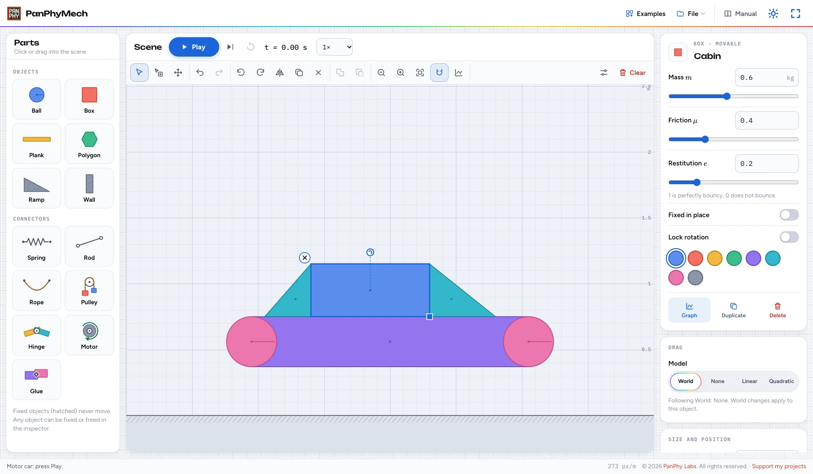
Enlarge screenshot ↗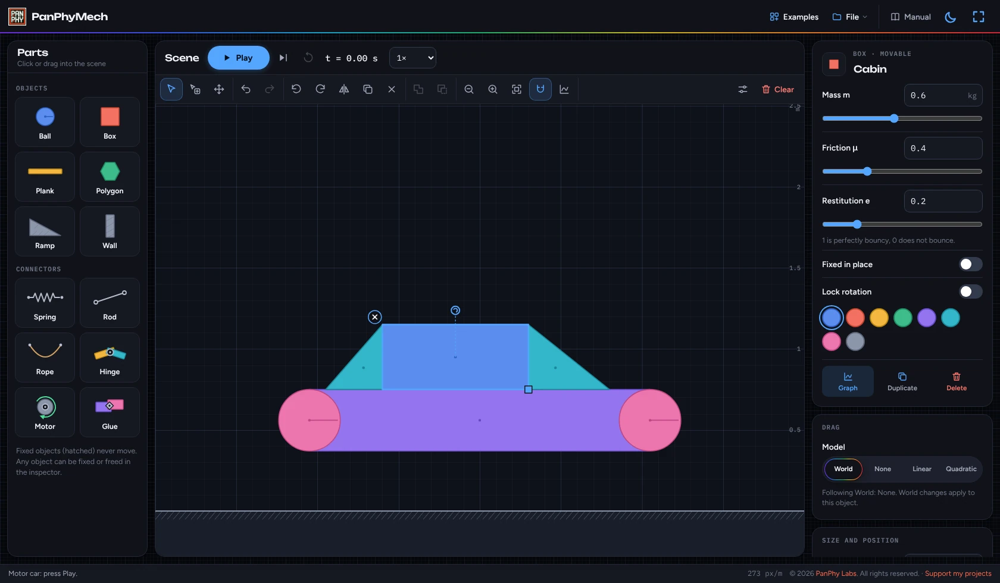
Enlarge screenshot ↗Step 2 of 5
Merge the parts
- Press Select several in the Scene toolbar and click all six parts. The Inspector lists them.
- Press Merge. They become one rigid shape with their total mass and the first part’s settings.
- Name the shape and set its mass to 4 kg.
One car body. Undo splits it back into its parts.
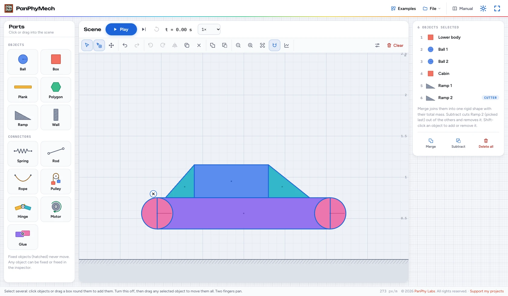
Enlarge screenshot ↗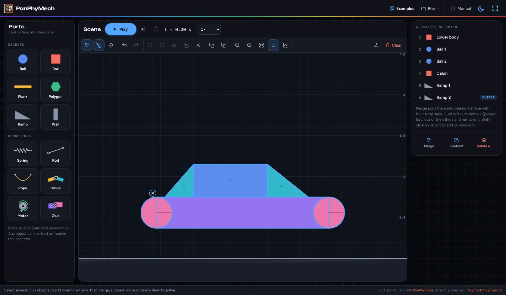
Enlarge screenshot ↗Step 3 of 5
Attach the wheels first
- Add two Balls of radius 0.3 m at (−4.7, 0.3) and (−3.3, 0.3), with friction 1.
- Choose Motor and click the center of the back wheel, where it overlaps the body. Choose Hinge and click the center of the front wheel.
- Set the motor to Clockwise, 8 rad/s and 20 N m.
- Connect the wheels before cutting the arches: a motor or hinge needs two overlapping objects when you place it, and it keeps its axle when the body is cut.
Both wheels are pinned at their centers. Hinged objects may overlap without colliding.
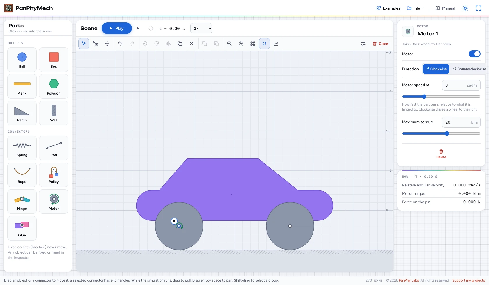
Enlarge screenshot ↗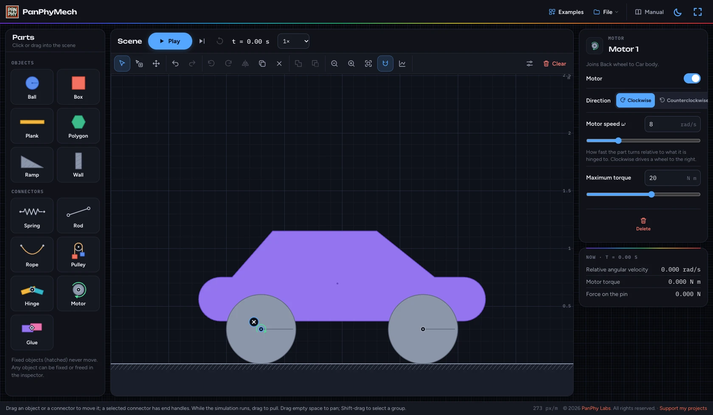
Enlarge screenshot ↗Step 4 of 5
Cut the arches and windows
- Add a Ball of radius 0.36 m at (−4.7, 0.3), over the back wheel.
- With Select several, click the body, then the ball. The object picked last is the cutter. Press Subtract. Leave the wheel unselected, or it is cut too.
- Repeat at (−3.3, 0.3) for the front arch.
- For each window, merge a small box and ramp 0.28 m tall into one cutter inside the cabin, then subtract it. A cutter wholly inside the body leaves a hole.
The arches clear the wheels by 6 cm, and the motor and hinge still join them to the body.
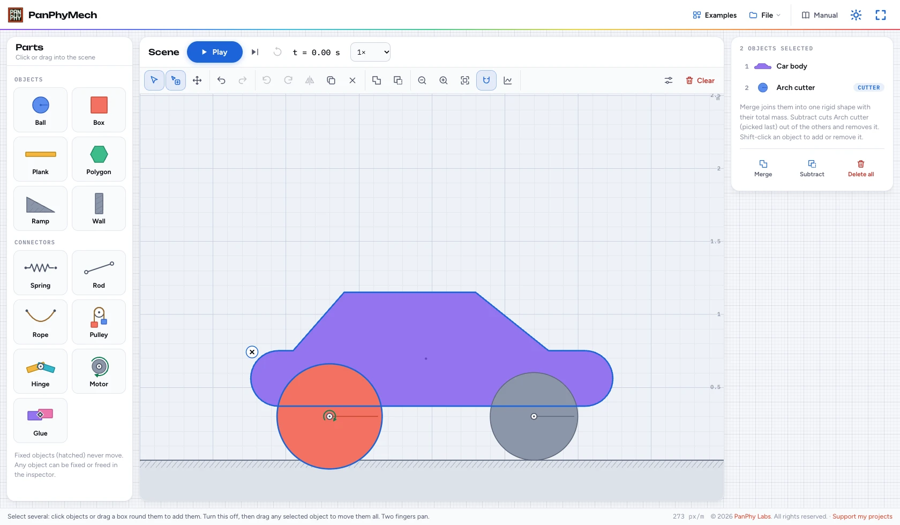
Enlarge screenshot ↗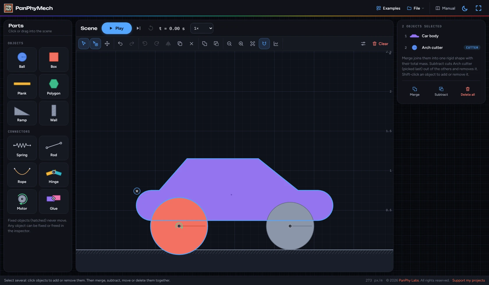
Enlarge screenshot ↗Step 5 of 5
Drive it
- Press Play. The motor turns the back wheel and the car drives up the slope.
- Compare with Examples → Motor car, which was built this way. Save your car as a .ppmech file to reuse it.
The car climbs the slope, and its trail shows the path.
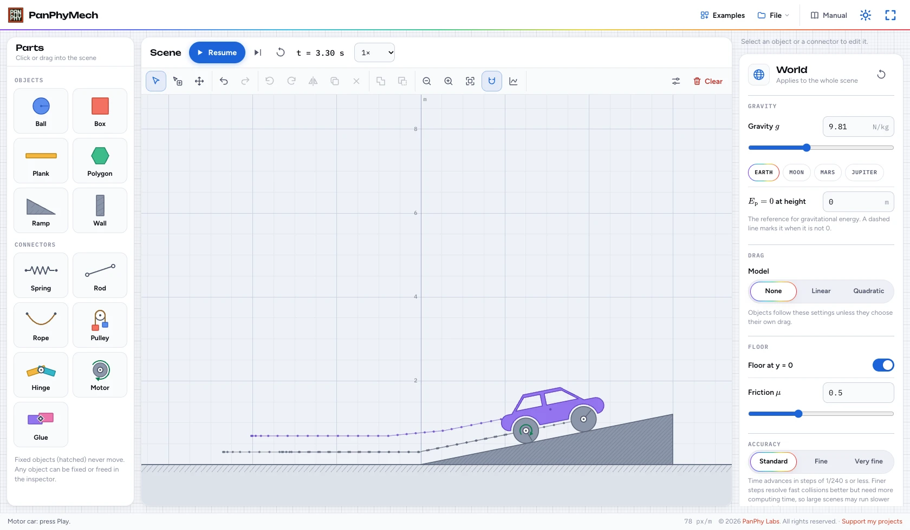
Enlarge screenshot ↗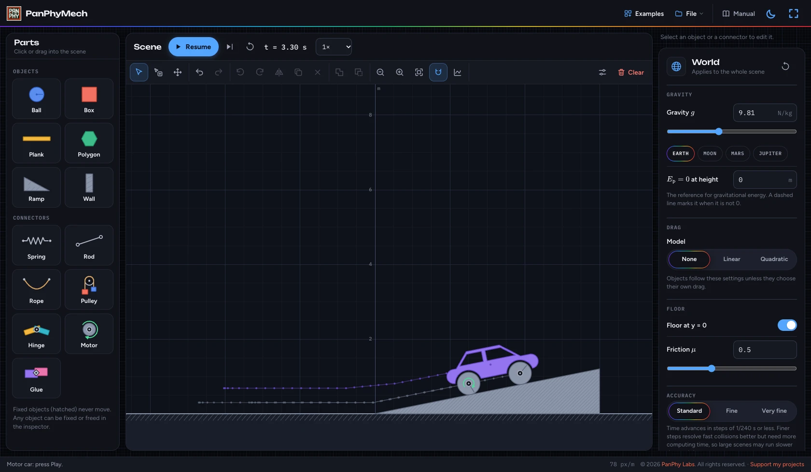
Enlarge screenshot ↗Reference
Build your own experiments, understand the readings and keep your work.
Build and edit
- Click a part in Parts, then click the scene, or drag it straight in. Hold Shift to place several. The library includes balls, boxes, planks, polygons, ramps and walls.
- Drag an object to move it. The round handle rotates it; the square handle resizes it. Mirror (M) flips it left to right, with anything hinged or glued to it. Use the Inspector for precise size, position and starting velocity. Fixed objects are hatched and do not move.
- Shift-click or use Select several to select multiple objects. To select a whole build, Shift-drag a box round it from empty space (or drag with Select several on, which suits touch screens); the box adds every object wholly inside it, and Ctrl+A (Command on Mac) selects everything. Drag any selected object, or any connector attached to them, to move them all; click a connector without dragging to select it on its own. Connector ends fixed to the background and pulley wheels inside the box are ringed and move with the group, so a pendulum’s pivot or a pulley comes along; ends outside it stay put and ropes refit. Drag empty space without Shift to pan, or use two fingers. Use Ctrl+C then Ctrl+V (Command on Mac) to copy and paste objects or a connector. Copied objects keep connectors between them; a connector copied alone keeps its attachments to the original objects. Duplicate also copies the selection. Merge combines selected objects into one rigid shape; Subtract cuts the last selected object out of the others. These edits can be undone.
- Hinged and glued objects move together while editing. Drag empty space to pan; scroll, pinch or use the zoom buttons to zoom. Fit frames current positions, so leave room for motion. With Snap on, moving or placing objects near another surface snaps them into contact, including rotated shapes and the floor. Bring an object’s center near another object’s edge and the center snaps onto that edge. Connected and selected groups move together. Away from surfaces, placement aligns to the grid; rotation aligns to 15° angles. Turn Snap off with G for free placement, or hold Ctrl (Command on Mac) to turn it off only while the key is down.
Connect objects
- Spring, rod, rope: click the first endpoint, then the second. When dragging from Parts, drop the first end and click the second. An endpoint on empty space is fixed to the background; endpoints snap to nearby object centers and, with Snap on, nearby edges.
- Pulley: click where the wheel goes, then the first end of the rope, then the second. When dragging from Parts, the drop places the wheel. One rope runs from the first end, over the wheel, to the second. At least one end must be on an object, and both ends must be outside the wheel. Drag the wheel or the rope to move the wheel; the ends stay attached. The Inspector sets the rope length, the wheel radius and the wheel position, and shows the tension, the length of each side and any slack. The rope cannot be shorter than its path over the wheel; a longer rope starts slack. Try Examples → Atwood machine and Cart pulled by a hanging mass.
- Join a spring to another connector: put a spring end on the free end of another spring, an ideal rope or rod, or a pulley’s rope, where that end is fixed to the background. A dot marks the join. You can also start a rope, rod or pulley rope on a spring’s free end. The two act as one connector with a massless knot between them, so one pull runs through both. At least one outer end must be on an object. Drag a joined end’s handle away to separate the pair. Deleting one part leaves the other fixed to the background where the join was, or removes it if it would then have no end on an object. Only a spring joins: two ropes joined end to end would just be one longer rope.
- Hinge, motor, glue: place at the overlap between two objects. With one object, the joint attaches it to the background. A motor turns its first attached object relative to the second; set its speed, direction and maximum torque in the Inspector.
- A spring’s initial natural length matches its placement; change its natural length, stiffness or damping in the Inspector. A rod holds a fixed distance; a rope limits the maximum distance.
- Rods and ropes are ideal and massless until Solid is enabled. Solid rods are thin bars; solid ropes are chains that can drape around objects. Their mass contributes to system energy. Extreme mass ratios can make a solid rope unstable.
- Drag a connector by its line, or select it and drag an endpoint handle (dragging a pulley moves its wheel). Each end attaches to the object under it when released. Drag hinges, motors and glue to reposition them. Right-click or touch and hold for quick settings. Esc or right-click cancels placement.
Editing after a run
- Pause keeps the current motion and recording. Play resumes. While running, drag an object to pull it with a force.
- Moving, resizing, adding or deleting after time has run makes the current state the new starting setup and starts a fresh recording. Undo can return to the previous setup.
- Parameter changes such as mass, friction, restitution, drag, gravity, World accuracy, spring or motor settings and rope lengths apply immediately. Reset first when you want to compare runs from the same initial conditions.
- Reset rebuilds the starting setup at time zero and clears the graph. A saved scene is an editable setup, not a replay or a graph recording.
Graphs, display and energy
- The recorder samples moving objects and springs throughout a run, so you can change the tracked object afterward. Whole system offers energy; springs offer extension, force and elastic energy. Fixed objects are not graph targets.
- Click a legend entry to hide or show that curve. Drag the separator above the graph to resize it. The graph toolbar button shows it again after closing it.
- With the graph focused, +/− zoom, arrow keys pan and Esc restores Full Graph. The scene canvas has its own shortcuts.
- Display settings control velocity arrows, force arrows, trails, labels and the grid. Scene exports preserve the current view, theme and visible display options, without editing handles.
- Force arrows show the forces on every moving object. Select an object to see only the forces acting on it, as a free-body diagram. Each force is drawn from where it acts, in its own color: weight \(W\) at the center of mass, normal reaction \(N\) and friction \(f\) at each contact, tension \(T\) and spring force \(F_\mathrm{s}\) where a connector meets the object’s surface (even when it is tied to the center), the reaction \(R\) of a hinge or glue joint, and drag \(D\). The forces show before time starts too, and Fit makes room for them. The heaviest object shown has its weight drawn a little longer than that object, so arrows grow as you zoom in. Contact forces briefly grow very long during an impact.
- Whole-system energy includes moving objects and solid connectors. The bob’s energy is not the whole system in a more complex scene. For objects attached to springs, the object energy graph includes the attached spring energy.
Physics model and limits
- All quantities use SI units. The simulation uses Planck.js (Box2D) rigid-body mechanics and advances time in steps. Accuracy in World sets the longest step: Standard (1/240 s, the default), Fine (1/480 s) or Very fine (1/1000 s). The same rules then shorten it for any scene that needs it: solid rods and ropes halve it, and stiff springs shorten it further, down to 1/5000 s, so they stay stable. One step applies to the whole scene. It is worked out again when time starts and whenever a mass, connector or World setting changes, and it is saved with the scene.
- Try Examples → Terminal velocity to compare two identical balls dropped from the same height. The coral ball has no drag; the blue ball follows World quadratic drag and reaches within 1% of its 3 m/s terminal velocity after about one-third of the 6 m drop. Its vertical-velocity graph levels near −3 m/s before landing. Use Graph of to compare the coral ball, and try 0.25× speed to watch the fall more slowly.
- Springs follow Hooke’s law with optional linear damping. Quadratic drag follows \(F = kv^2\).
- The Drag section of World has a row of buttons: None, Linear or Quadratic; Linear also chooses whether it is set by a coefficient \(b\) or by fluid viscosity \(\eta\). Each object defaults to World. Choosing None, Linear or Quadratic in the object’s Drag card replaces World drag for that object only; it does not change World or add the two forces together. None disables drag.
- Linear drag uses \(F = bv\), with coefficient \(b\) in kg/s. Alternatively choose Stokes viscosity η to calculate \(b = 6\pi r\eta\), with viscosity from 0–1 Pa·s. Balls use their radius; other shapes use an equal-area radius as an approximation. Quadratic drag uses \(F = kv^2\), with coefficient \(k\) in kg/m. Drag opposes motion. These models do not automatically account for streamlining, buoyancy or rotational drag. Solid rods and ropes follow World drag.
- An object with its own drag choice glows amber and appears in the notes pill at the top right of the scene, even when it chooses the same model as World. Click its note to open the object’s Drag card. Choose World to follow the shared settings and remove the glow and note. Fixed objects have no active drag or glow. Changing drag settings during playback applies immediately without resetting time.
- Friction combines the two surface coefficients using their geometric mean; if either is zero, the contact is frictionless.
- Bounciness uses the larger restitution of the two surfaces. A ball with restitution 1 bounces back to the height it fell from, and slow collisions bounce too; only contacts closing slower than 1 cm/s are inelastic, which keeps resting objects quiet. Tiny contact overlaps (about 1 mm) and small energy changes at impacts are normal numerical effects.
- A pulley is ideal: a fixed wheel with no mass or friction, and one massless rope that cannot stretch. The rope length \(L\) is the whole rope: straight from the first end to the wheel, round the wheel, and straight to the second end. Both sides share it, so one side lengthens only as the other shortens. The rope pulls each end along its own side with the same tension \(T\), where it is attached, so an attachment away from the center also turns the object. It never pushes: it goes slack when the ends come closer, and going taut again is a sudden jerk that shares momentum between the ends, like an inelastic collision. The rope wraps round the far side of the wheel from its ends (over the top when both hang below) and keeps that side while time runs. If an end swings over the top of the wheel, the rope comes off and runs straight between its ends; it does not wrap onto the other side. Objects collide with the wheel but not with the rope. For two hanging masses the acceleration is \(\dfrac{(m_2 - m_1)g}{m_1 + m_2}\) and the tension \(\dfrac{2m_1 m_2 g}{m_1 + m_2}\); the simulation matches both.
- A pulley has one fixed wheel and one rope. Movable pulleys, several wheels on one rope, a wheel with mass or friction, and ropes that wrap round objects are not modeled; a solid rope can drape over a fixed object instead. A mass swinging on a pulley rope loses a little energy over a long run, unlike a pendulum on an ideal rope, less at finer accuracy.
- In a joined pair the knot has no mass, so both parts pull equally and lie in one straight line. Two springs in series act as one spring with \(k = \dfrac{k_1 k_2}{k_1 + k_2}\), and each stretches in inverse proportion to its own \(k\). A spring and a rope act as a bungee: no pull while the rope is slack, then the spring stretches. A spring and a rod act as a spring whose natural length includes the rod, and can push as well as pull. A spring on a pulley rope reads the rope’s tension, like a spring balance; the rope’s length can then be shortened to stretch the spring, as long as the knot stays off the wheel. Springs joined to springs have no damping, and joined rods and ropes stay ideal (not solid). Three or more connectors meeting at one knot are not modeled.
- A pendulum on an ideal rod or rope keeps its energy to within about 1% however long it swings. Hinged rigid bodies, such as a solid rod pivoted at one end, still lose a little energy over long runs, less at finer accuracy.
- Gravitational energy is measured from the height set in World, which defaults to the floor at 0 m. Some examples choose another reference; negative gravitational energy below that height is valid.
- Finer steps are more accurate but need more computing time, so a large scene may run slower than real time; the scene shows a note when it does. Standard keeps large scenes real-time on classroom tablets, but it limits how precisely nearly simultaneous collisions are resolved. A ball moving at 2.3 m/s travels about 1 cm per 1/240 s step, so collisions that fall inside one step, such as along a row of touching balls, are solved together instead of one after another, and each time a little momentum goes to the wrong ball. To see it, open Examples → Newton’s cradle, set World accuracy to Standard, every ball’s restitution to 1 and World drag to None: after about eight clean swings, the middle balls start to move. The example opens at Very fine, where they stay still for longer. Any accuracy other than Standard appears in the notes pill at the top right of the scene.
- When two wheels are both driven at the same speed and joined rigidly, as on a four-wheel-drive car, the simulation fixes their total friction but not how it is shared: they can push against each other with equal and opposite forces that never die away. The Motor car example drives only its back wheel for this reason.
- Merged or cut shapes can catch at seams, and very thin walls can miss fast objects. This is an educational model; reduce extreme speeds, stiffnesses or mass ratios if a setup becomes unstable.
Files and browser storage
- Autosave belongs to this browser and device. Clearing site data can remove it. Keep .ppmech backups for work you want to keep or share.
- Save uses a filename/location picker where supported and a download elsewhere. Scene SVG/PNG exports are images; open the .ppmech file to continue editing.
- PanPhyMech and this manual work offline after the homepage shows the app as Offline ready. Visit online first to download the required files.
Keyboard
| Keys | Action |
|---|---|
| Space | Play / pause (outside buttons and entry fields) |
| . | Advance 1/60 s |
| V / H | Select / pan tool |
| R / Shift+R | Rotate 15° clockwise / counterclockwise |
| M | Mirror the selected object left to right |
| G | Toggle snap |
| Hold Ctrl | Turn snap off until Ctrl is released (Command also works on Mac) |
| Del / Backspace | Delete selection |
| Ctrl+C / Ctrl+V | Copy / paste selection (Command also works on Mac) |
| Ctrl+A | Select everything in the scene, with scene focused (Command also works on Mac) |
| Shift+drag | Select a group with a box from empty space |
| Ctrl+Z / Ctrl+Shift+Z | Undo / redo; Ctrl+Y also redoes (Command also works on Mac) |
| Arrow keys / Shift+arrows | Nudge the selection 0.01 m / 0.1 m with scene focused |
| + / − / 0 | Zoom in / out / fit scene |
| Esc / right-click | Cancel placement (Esc also clears selection) |